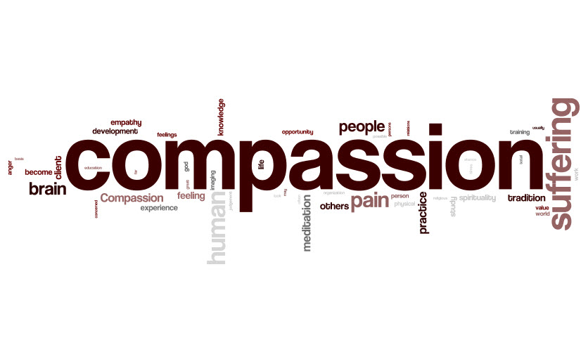

Looking back on my 'Exploring your Values' blog from week 1, I see that I listed Compassion as my most important value: "I think Compassion is one of the most important values when it comes to my own happiness. I have found that truly caring for others and wanting the best for them makes everyone happy in the end, and it's contagious! If someone shows you compassion, you want to return it, and everyone wins!"
In the context of stereotype threat, I think compassion can play a huge rule as a mitigant. As was discussed in last weeks cultural blog, stereotype threat is intensified when one believes that his or her behavior may be viewed through the lense of stereotype. When one is surrounded by supportive, compassionate people that truly care about one another, stereotype threat should be mitigated because one should not feel as though their behavior is being viewed through a lense of stereotype.
During Dev Bootcamp, I plan to be as compassionate as possible, and to truly do my best to help others. I believe if everyone has this attitude, then everyone wins. We are all in this program together, and we should function as a team, not as competitors or adversaries. I can't wait to meet people with all different types of backgrounds and beliefs!